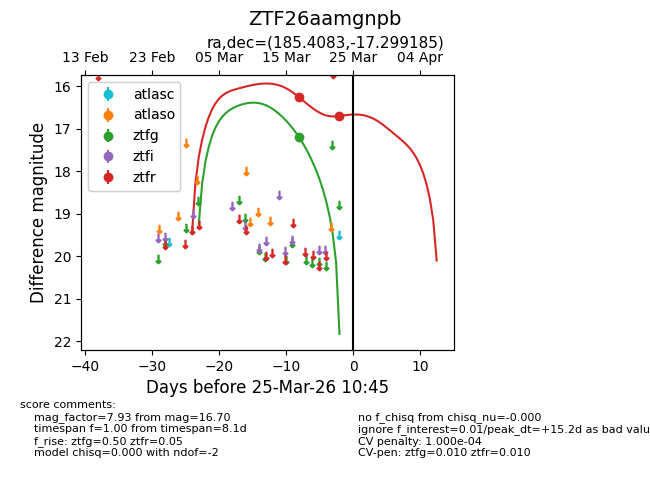
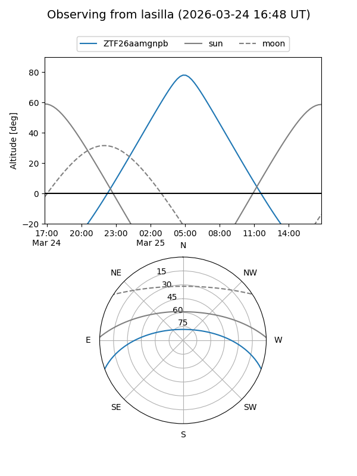
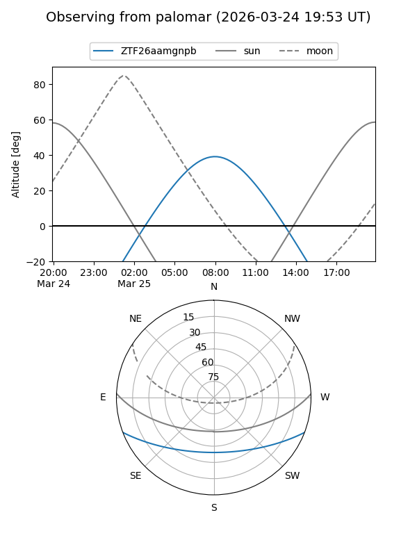
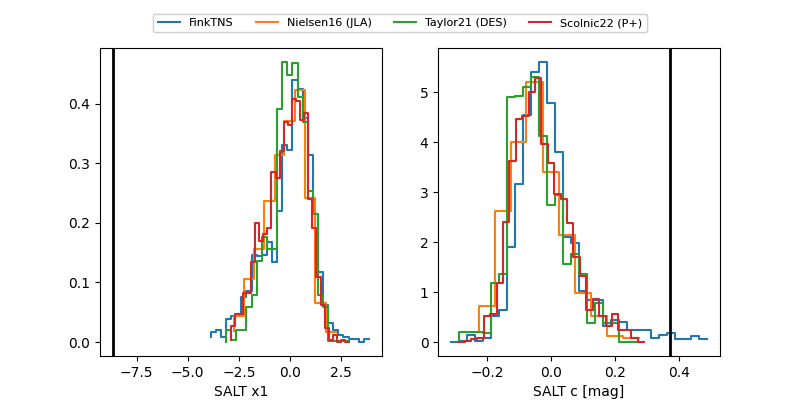

ZTF26aamgnpb
Target ZTF26aamgnpb at 2026-03-25 10:48
Aliases and brokers:
FINK: link
Lasair: link
ALeRCE: link
alt names
ZTF26aamgnpb (ztf,fink_ztf)
Coordinates:
equatorial (ra, dec) = 185.4083,-17.29918
equatorial (HMS+DMS) = 12:21:38.00,-17:17:57.07
galactic (l, b) = (292.8495,+44.98829)
Flags:
likely cv
Photometry:
last ztfg=17.18, ztfr=16.70
1 ztfg, 2 ztfr detections
Lightcurve

Visibility


Additional plots
